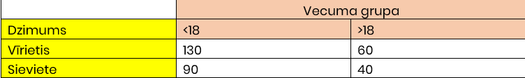

Uzdevumi paredzēti paškontrolei. Pēc uzdevuma izpildes, uzspiediet uz pogas: "Parādīt atbildi!", lai salīdzinātu salīdzinātu secinājumus, vai H0 apstiprināja!
Tabulā dota informācija par skolā uzņemto skolēnu skaitu katrā mācību gadā. Pārbaudīt, vai skolēnu skaits sadalās vienmērīgi.
Noteikt, vai klientu dzimums ir savstarpēji saistīts starp pieaugušajiem un bērniem.
Tiek apgalvots, ka putekļsūcējs gadā patērē vidēji 46 kWh ar standartnovirzi 7.2 kWh. Izlases paraugs no 12 mājām norāda, ka putekļsūcēji patērē vidēji 42 kWh gadā. Patērētāji vēlas noskaidrot, vai, pie 5% nozīmības līmeņa, putekļsūcējs gadā vidēji iztērē mazāk nekā 46 kWh.
No cementa fasēšanas līnijas nejauši tika atlasīti un nosvērti 40 maisi, lai noskaidrotu vai tiek iesvērti tieši 40 kg cementa. Vidējais svars bija x=40.9 kg, standartnovirze bija S=8.43. Pārbaudīt, vai cementa fabrika maisos iesver 40 kg.